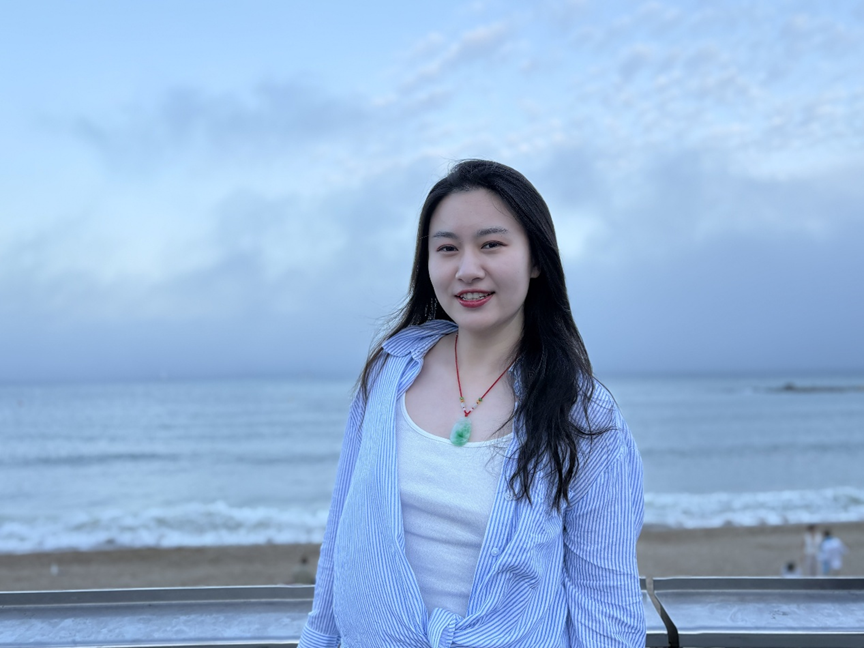
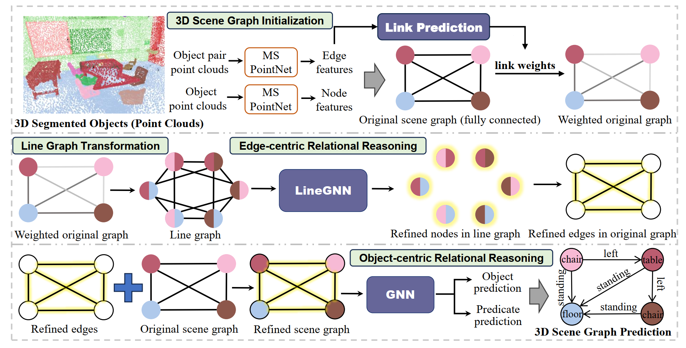
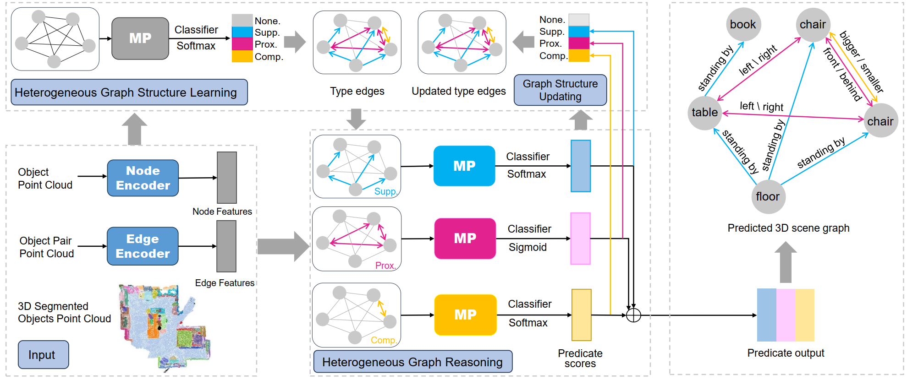
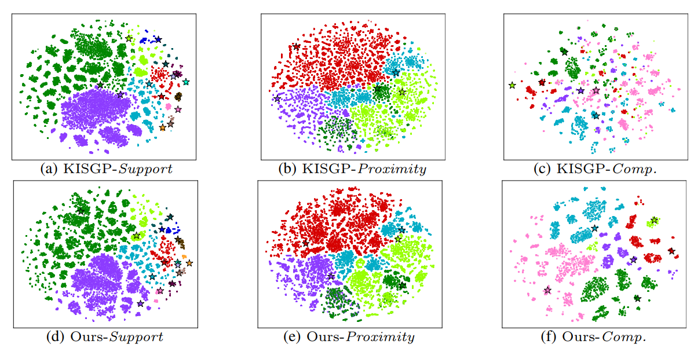
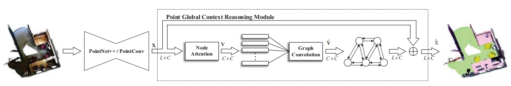
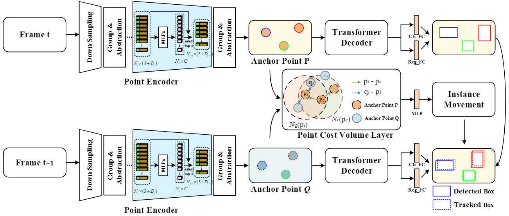
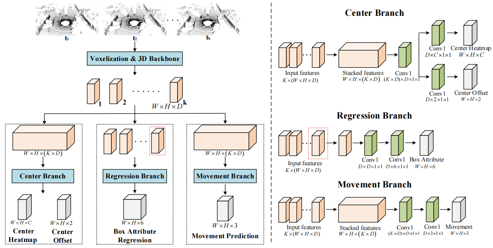
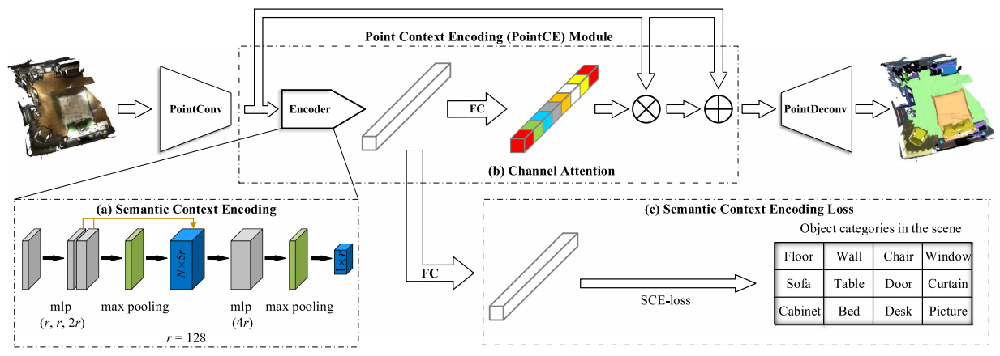

Yanni Ma (马燕妮)
Ph.D. Candidate
Google Scholar
Sun Yat-sen University (SYSU)
Email: mayn3@mail2.sysu.edu.cn
Brief Bio
I am a Ph.D. candidate at Sun Yat-Sen University (SYSU), supervised by Prof. Yulan Guo.
I was a visiting Ph.D. student at the University of Amsterdam (Dec 2023 – Jun 2025), working with Prof. Martin R. Oswald and Prof. Theo Gevers .
Before that, I received my B.E. and M.E. degrees from Sun Yat-Sen University (SYSU).
My research focuses on 3D vision and scene understanding, particularly 3D scene graph prediction and relational reasoning. I also have experience in 3D semantic segmentation, object detection/tracking, and vision-language learning.
News
2025.11 | Our paper on "Edge-Centric Relational Reasoning for 3D Scene Graph Prediction" is accepted to AAAI 2026.
2024.07 | Our paper on "Heterogeneous Graph Learning for Scene Graph Prediction in 3D Point Clouds" is accepted to ECCV 2024.
2023.05 | Our paper on "AnchorPoint: Query Design for Transformer-based 3D Object Detection and Tracking" is accepted to IEEE TITS.
2020.07 | Our paper on "Semantic Context Encoding for Accurate 3D Point Cloud Segmentation" is accepted to IEEE TMM.
2019.11 | Our paper on "Global Context Reasoning for Semantic Segmentation of 3D Point Clouds" is accepted to WACV 2020.
2024.07 | Our paper on "Heterogeneous Graph Learning for Scene Graph Prediction in 3D Point Clouds" is accepted to ECCV 2024.
2023.05 | Our paper on "AnchorPoint: Query Design for Transformer-based 3D Object Detection and Tracking" is accepted to IEEE TITS.
2020.07 | Our paper on "Semantic Context Encoding for Accurate 3D Point Cloud Segmentation" is accepted to IEEE TMM.
2019.11 | Our paper on "Global Context Reasoning for Semantic Segmentation of 3D Point Clouds" is accepted to WACV 2020.
Publications


Edge-Centric Relational Reasoning for 3D Scene Graph Prediction
Yanni Ma, Hao Liu, Yulan Guo, Theo Gevers, Martin Oswald.
AAAI Conference on Artificial Intelligence (AAAI), 2026 .

Heterogeneous Graph Learning for Scene Graph Prediction in 3D Point Clouds
Yanni Ma, Hao Liu, Yun Pei, Yulan Guo.
European Conference on Computer Vision (ECCV), 2024..

Type-Specific Prototype-Enhanced Heterogeneous Graph Learning for 3D Scene Graph Prediction
Yanni Ma, Hao Liu, Pei Yun, Yulan Guo, Theo Gevers, Martin Oswald.
Under review..

Global Context Reasoning for Semantic Segmentation of 3D Point Clouds
Yanni Ma, Yulan Guo, Hao Liu, Yinjie Lei, Gongjian Wen
IEEE/CVF Winter Conference on Applications of Computer Vision (WACV).
3D Scene Graph Guided Vision-Language Pre-training
Hao Liu, Yanni Ma, Yan Liu, Haihong Xiao, Ying He
Arxiv 2411.18666.

AnchorPoint: Query Design for Transformer-Based 3D Object Detection and Tracking
Hao Liu , Yanni Ma, Hanyun Wang, Chaobo Zhang, Yulan Guo
IEEE Transactions on Intelligent Transportation Systems (TITS, CCF-B), 2023.

CenterTube: Tracking Multiple 3D Objects with 4D Tubelets in Dynamic Point Clouds
Hao Liu, Yanni Ma, Qingyong Hu, Yulan Guo
IEEE Transactions on Multimedia (TMM, CCF-B), 2023.

Semantic Context Encoding for Accurate 3D Point Cloud Segmentation
Hao Liu, Yulan Guo, Yanni Ma , Yinjie Lei, Gongjian Wen
IEEE Transactions on Multimedia (TMM, CCF-B).